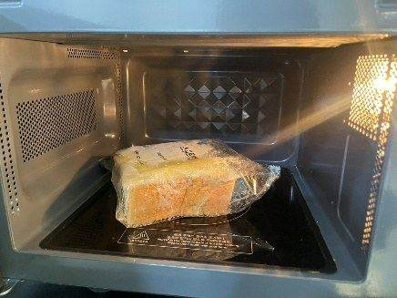
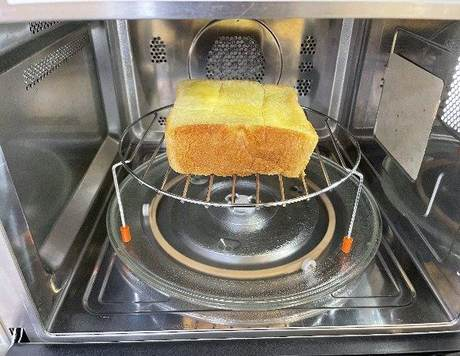
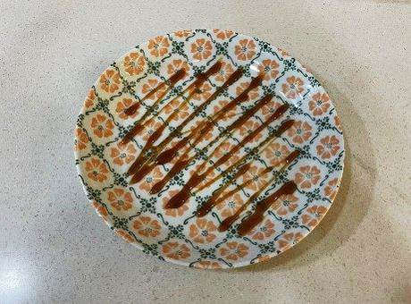
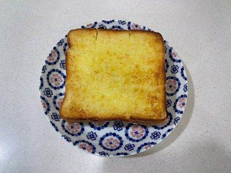

| 메뉴명 | 리얼 허니브레드 |
|---|---|
| 판매가격 | 6,900원 |
| 원재료 | 허니브레드(스위트번), 꿀, 카라멜소스, 휘핑크림 |
| 사용 부자재 | 덮밥접시, 포크, 나이프 |
| 메뉴특징 | 최상급 유지를 사용하고 꿀을 사용해 달콤하고 부드러운 정통 유럽풍 허니브레드 |




오븐에서 나온 허니브레드는 버터 때문에 표면이 많이 뜨겁기 때문에 생크림이 빨리 녹을 수 있음. 제조 후 최대한 빨리 고객에게 제공하기!!
더 노릇하게 완성하고 싶을 시
그릴모드로 1분간 추가 조리 (선택)
휘핑크림을 브레드 옆에 위치하는
것으로 담음새 수정 가능.
※ 오븐레인지 사용법은 기계 및 위생 매뉴얼 P48~49 참고
※ 꺼낼 때 화상에 주의!